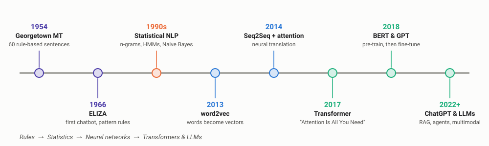
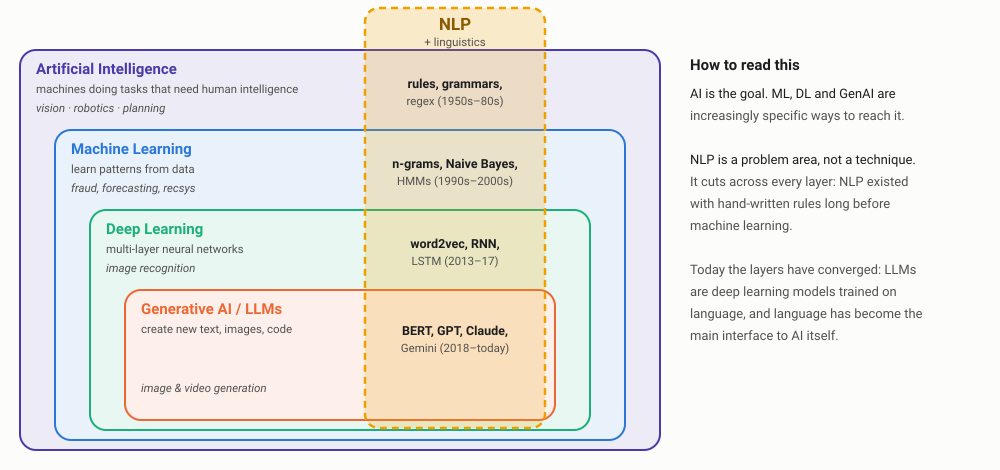
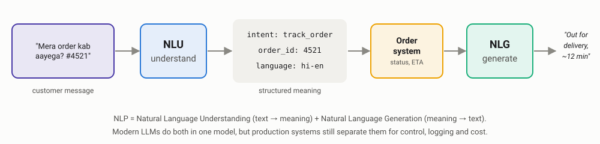
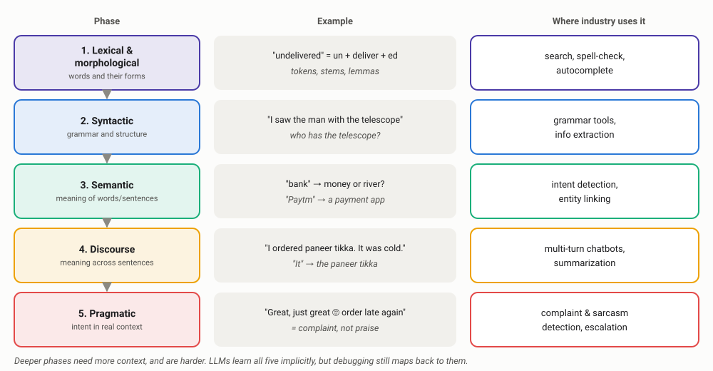
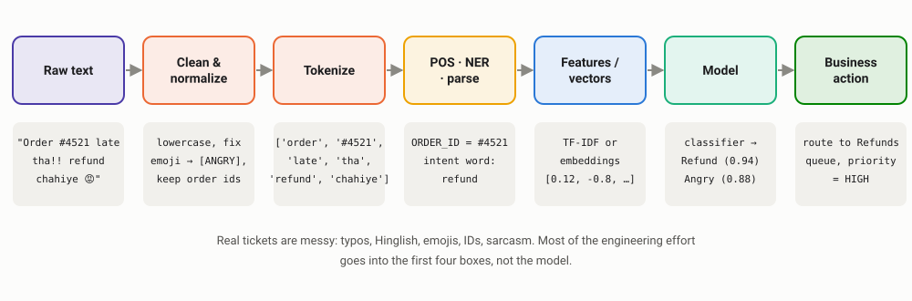
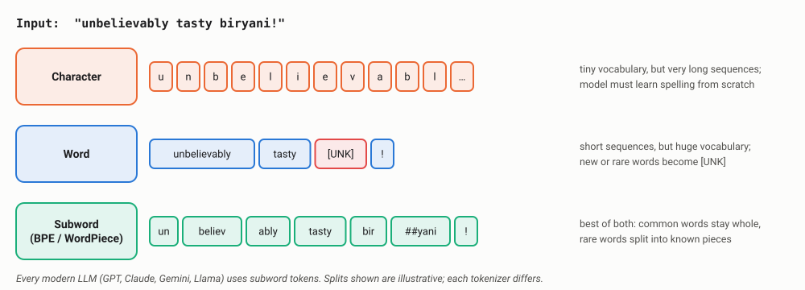
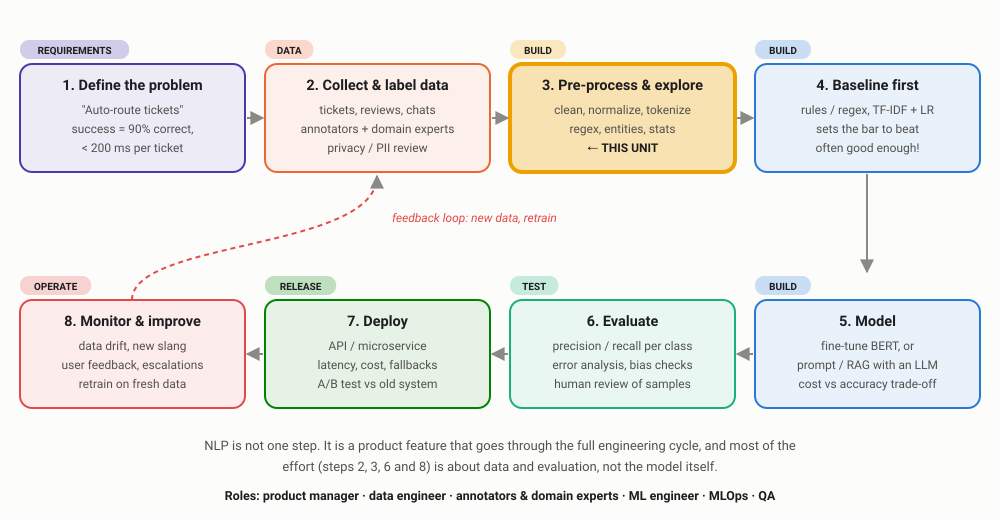

Introduction to Language
How the industry turns messy human text into something a machine can understand and act on, from the first rule-based systems to the pre-processing pipelines behind today's chatbots.
Every code block on this page needs these libraries. In Google Colab, run this in the first cell:
!pip install spacy nltk
!python -m spacy download en_core_web_smOn your own computer, run the same commands in a terminal without the leading !. No data files needed.
00Opening scene: Her (2013)
In Spike Jonze's film Her, Theodore (Joaquin Phoenix) installs a new operating system, and meets Samantha, an AI he simply talks to. Watch their first conversation and notice how much "language" the OS has to handle.
Video not playing? Watch the scene on YouTube ↗
While you watch, spot the NLP
Speech → text
Samantha hears Theodore's voice, hesitations and all. That is speech recognition.
Understanding
She works out what he means, not only what he literally says (NLU, semantics).
Context & memory
She keeps track of the whole conversation, not one sentence at a time (discourse).
Emotion & tone
She reacts to his mood, humour and awkwardness (pragmatics, sentiment).
Generating replies
She answers in natural, witty language and a human voice (NLG, text-to-speech).
In 2013 this was science fiction. Today, LLM-based voice assistants can hold open-ended spoken conversations much like this one. Everything in this unit (tokenization, entities, context, sentiment) is a building block of that experience. Question for the class: which parts of Samantha do we already have, and which are still missing?
01Evolution of natural language
Humans have been speaking for tens of thousands of years, but writing is only about 5,000 years old (Sumerian cuneiform, around 3200 BCE). Language was never designed; it evolved, and it keeps evolving. That is exactly why it is hard for machines.
Language drift is a production problem. A sentiment model trained on 2019 reviews does not know that "this slaps" or "mid" carry sentiment. Teams monitor for data drift and retrain models regularly, because the language customers use keeps changing.
How machines learned language
NLP itself has gone through four eras. Each one solved a limitation of the previous one, and all four are still in use somewhere in industry today.

| Era | Core idea | Still used in industry for… |
|---|---|---|
| Rules (1950s–80s) | Experts write if-then rules and regular expressions | Extracting PAN / Aadhaar / phone numbers, masking PII, guardrails |
| Statistical (1990s–2000s) | Learn word probabilities from data (n-grams, Naive Bayes, HMMs) | Spam filters, fast baselines, keyboard suggestions on low-end devices |
| Neural (2013–2017) | Words become vectors; RNNs and CNNs learn patterns | Lightweight on-device models, recommendation embeddings |
| Transformers & LLMs (2017–today) | Pre-train huge models on the internet, then adapt them | Chatbots, search, summarization, coding assistants, agents |
02What is NLP?
Natural Language Processing is the field of making computers understand, interpret and generate human language. It sits where computer science, artificial intelligence and linguistics meet.
NLP vs AI: how NLP becomes part of AI
Students often use "AI", "ML", "NLP" and "LLM" as if they meant the same thing. They do not. AI is the broad goal, ML, deep learning and generative AI are increasingly specific techniques, and NLP is a problem area: language. That is why NLP cuts across all of them.

| Term | What it means | NLP example |
|---|---|---|
| AI | Any technique that makes machines do tasks that need human intelligence | A rule-based chatbot (ELIZA, 1966) is AI, with no learning at all |
| Machine learning | Systems that learn patterns from data instead of hand-written rules | A Naive Bayes spam filter learns which words signal spam |
| Deep learning | Machine learning with multi-layer neural networks | An LSTM that predicts the next word on your phone keyboard |
| Generative AI / LLMs | Very large deep learning models that generate new content | ChatGPT, Claude or Gemini answering in fluent language |
| NLP | The problem of working with human language, using any of the above | All four rows above are NLP systems |
For most of AI's history, NLP was one branch alongside computer vision, speech and robotics. LLMs changed that: language became the interface to AI itself. Today you "program" an AI system by writing instructions in English (prompting), and even image and code models are driven by text. That is why NLP skills are now core AI skills.
NLU and NLG: the two halves
In industry, NLP work is usually split into two halves:
- NLU (Natural Language Understanding): text → meaning. What does the customer want?
- NLG (Natural Language Generation): meaning → text. How do we reply?

Notice the middle box. Businesses rarely want "text in, text out". They want structured data (an intent, an order ID, a sentiment score) that can trigger an action in a real system: refund, escalate, update CRM. Most of NLP in industry is about producing that structure reliably.
03From Samantha to a real product
Samantha is the dream: one system that understands everything. Real products start with a narrow, measurable problem, and that is the one we will follow for the rest of this unit.
A food-delivery app receives thousands of reviews and support tickets every hour. They are short, emotional, full of typos, emojis and Hinglish:
"Order #4521 late tha!! refund chahiye 😡" · "delivery late tha but food ekdum mast 🔥" · "Great, just great 🙄 cold biryani again"
Our job: understand what each customer means, and route it to the right team automatically. Every concept in this unit will be applied to these messages.
04Why language is hard for machines
Humans resolve ambiguity instantly using context and common sense. Machines have neither by default.
Lexical ambiguity
One word, many meanings.
"I went to the bank." Money or river?
Syntactic ambiguity
One sentence, many structures.
"I saw the man with the telescope." Who has it?
Reference
What does "it" point to?
"The phone fell on the laptop and it broke."
Sarcasm & pragmatics
The words say one thing, the meaning is the opposite.
"Great, my order is late again 👏"
Code-mixing
Two languages in one sentence, often in Roman script.
"Food ekdum mast tha but delivery bahut late"
Noise
Typos, slang, abbreviations, emojis.
"pls cncl my ordr asap 😤😤"
A keyword-based sentiment filter counts "Great" as positive, so it marks "Great, my order is late again 👏" as a happy customer. That is how angry customers end up in the "no action needed" queue. This single example explains why the industry moved from rules → statistics → context-aware models.
05Need of NLP: why businesses invest in it
Most business information is not in neat database tables. It lives in emails, chats, call recordings, reviews, contracts and PDFs. Industry analysts commonly estimate that around 80% of enterprise data is unstructured, and most of that is text or speech.
Scale
No team can read 50,000 reviews a day. A model can, in minutes.
Speed
Urgent complaints (food safety, fraud) get flagged in seconds, not days.
Cost
Chatbots resolve routine queries ("where is my order?") so human agents handle the hard ones.
Insight
"Delivery complaints in Pune up 40% this week" is a business decision waiting to happen.
Compliance
Detect and mask personal data (PII) in chats and documents before they are stored or shared.
Inclusion
Serve users in their own language: Hindi, Marathi, Tamil, not only English.
06Applications of NLP
The syllabus highlights three application areas: opinion mining, dialog analysis and discourse. Here is what each looks like in a real product.
Opinion mining (sentiment analysis)
Extracting opinions and emotions from text. In industry, overall sentiment is rarely enough. Teams use aspect-based sentiment: what exactly was good or bad?
| Review | Overall | Aspect-based |
|---|---|---|
| "delivery late tha but food ekdum mast 🔥" | Mixed | Delivery: negative · Food: positive |
| "Packaging leaked, biryani was cold" | Negative | Packaging: negative · Temperature: negative |
| "Rider was super polite, 10/10" | Positive | Delivery partner: positive |
Aspect-level results go to different teams: food complaints go to the restaurant, delivery complaints to logistics, packaging complaints to the vendor team. The same approach is used for product reviews on e-commerce sites, app store reviews, brand monitoring on social media and even stock-market sentiment from news.
Dialog analysis (conversational AI)
Understanding multi-turn conversations: what the user wants (intent) and the details they gave (slots or entities).
| User says | Intent | Slots |
|---|---|---|
| "Mera order kab aayega? #4521" | track_order | order_id = 4521 |
| "Book a table for 4 at Barbeque Nation tomorrow 8 pm" | book_table | people = 4, restaurant = Barbeque Nation, date = tomorrow, time = 8 pm |
| "cancel it" | cancel_order | order = from previous turn |
Beyond chatbots, call-centre analytics is a big industry use: transcribe calls, detect customer frustration, check whether the agent followed the compliance script, and summarize each call for the CRM.
Discourse analysis
Meaning that spans across sentences. Two ideas matter most in practice:
- Coreference: "I ordered paneer tikka. It was cold." The system must know "it" = paneer tikka to log a complaint against the right dish.
- Discourse relations: "The delivery was late but the food was amazing." Words like but, however and although shift the weight. The customer is mostly happy.
Discourse is what makes summarization and multi-turn chatbots work. "cancel it" in the table above only makes sense with discourse context.
Healthcare: clinical NLP
Hospitals generate enormous amounts of free text: discharge summaries, radiology and pathology reports, doctors' progress notes, prescriptions and lab comments. The most valuable clinical information is often only in this text, not in structured fields. Two of the most important industry applications:
1. PHI de-identification (de-ID)
Before clinical text can be used for research, analytics or model training, Protected Health Information (PHI) must be removed. In the US, the HIPAA "Safe Harbor" method lists 18 types of identifiers (names, dates, phone numbers, medical record numbers, addresses and more). In India, the Digital Personal Data Protection Act, 2023 governs how personal data, including health data, can be processed.
| Original note (synthetic) | After de-identification |
|---|---|
| Mr. Ramesh Patil, 67, MRN 00458213, admitted to City General Hospital, Pune on 14/08/2026. Contact: 98220 11223. Daughter Sneha visits daily. | Mr. [NAME], 67, MRN [ID], admitted to [HOSPITAL], [CITY] on [DATE]. Contact: [PHONE]. Daughter [NAME] visits daily. |
Many teams replace PHI with realistic fake values instead of tags ("surrogates"), and shift all dates by the same random offset so that time gaps between events stay correct for analysis.
De-ID fails in both directions. Over-redaction: "Parkinson's disease" or "Down syndrome" get masked because they look like person names, destroying clinical meaning. Under-redaction: a single missed name is a privacy breach and a legal risk. That is why recall is the metric that matters most, and why production systems combine regex, NER models and human QA. Common tools include Microsoft Presidio (open source), AWS Comprehend Medical and Google Cloud Healthcare API.
2. Extracting information from reports and notes
Turning a doctor's note into structured data that systems can use. A synthetic example:
| Type | Extracted | Status / detail |
|---|---|---|
| Condition | Type 2 diabetes mellitus (T2DM) | Present, history |
| Condition | Hypertension (HTN) | Present, history |
| Symptom | Chest pain | Present |
| Condition | Pneumonia | Negated ("no evidence of") |
| Risk factor | Smoking | Negated ("denies") |
| Medication | Metformin | 500 mg, twice daily (BD) |
| Medication | Aspirin | 75 mg, once daily (OD) |
| Lab | HbA1c | 8.2% |
What makes clinical text hard:
- Abbreviations everywhere: y/o, h/o, BD, OD, T2DM. "MS" can mean multiple sclerosis or mitral stenosis.
- Negation: "no evidence of pneumonia" mentions pneumonia but means the patient does not have it. Classic algorithms like NegEx exist just for this.
- Uncertainty and context: "possible pneumonia", "rule out MI", "mother had breast cancer" (family history, not the patient).
- Standard codes: extracted terms must map to ICD-10, SNOMED CT, RxNorm or LOINC so that other systems understand them.
Medical coding
Suggest ICD-10 codes from discharge summaries for insurance claims.
Clinical trial matching
Find patients whose notes match a trial's eligibility criteria.
Pharmacovigilance
Detect adverse drug reactions in notes, reports and social media.
Report summarization
Summarize radiology findings and flag follow-ups that were never scheduled.
Healthcare is a high-stakes domain: a missed negation can put a wrong diagnosis in a patient's record. Clinical NLP systems are built with a human in the loop, audit trails and explainable outputs, and LLMs are usually deployed in private, compliant environments rather than sent to public APIs.
More applications you use every day
Search
Understanding "cheap veg food near me open now" in food apps and e-commerce.
Machine translation
Google Translate; Bhashini, India's national language translation mission.
Smart compose & autocorrect
Gmail Smart Compose, phone keyboards predicting the next word.
Document AI
Reading invoices, KYC forms, insurance claims and contracts automatically.
Content moderation
Flagging hate speech, spam and scams on social platforms.
Recruitment
Parsing resumes and matching them to job descriptions.
07Phases of NLP
Classical NLP breaks understanding into five layers. Each layer needs more context than the one before it.

Modern LLMs do not run these phases as separate steps; they learn all of them implicitly. But the phases are still the best debugging checklist. When a chatbot fails, ask: did it misread the word (lexical), the structure (syntactic), the meaning (semantic), the earlier message (discourse) or the tone (pragmatic)?
08Data pre-processing: the real pipeline
Before any model sees text, it goes through a pipeline. Here is our support ticket travelling through a typical production system:

The next sections walk through each pre-processing step with real code and real outputs.
09Normalization
Normalization makes different ways of writing the same thing look the same: "PLS", "pls" and "please" should not be three different words to a model.
| Step | Before → after | Watch out |
|---|---|---|
| Lowercasing | "REFUND" → "refund" | "US" (country) vs "us". Some tasks need case (NER). |
| Unicode normalization | "ｒｅｆｕｎｄ" (full-width) → "refund" | Spammers use look-alike characters to dodge filters. |
| Masking | "#4521" → [ORDER_ID], "₹450" → [MONEY] | Keep the fact that there is an ID; drop the useless number. |
| Emoji handling | "😡" → [ANGRY] | Deleting emojis deletes sentiment! |
| Elongation | "soooo" → "soo", "!!!!" → "!!" | Keep a trace: repetition signals emotion. |
| Slang / spelling | "pls" → "please", "cncl" → "cancel" | Build dictionaries from your own data. |
| Transliteration | "बहुत अच्छा" ↔ "bahut accha" | Indian users mix scripts freely. |
import re, unicodedata
EMOJI_MAP = {"😡": " [ANGRY] ", "🙄": " [ANNOYED] ", "😍": " [LOVE] ", "🔥": " [FIRE] "}
SLANG = {"pls": "please", "plz": "please", "thx": "thanks", "u": "you", "r": "are"}
def normalize(text: str) -> str:
text = unicodedata.normalize("NFKC", text).lower() # unify look-alike unicode, then lowercase
for emo, tag in EMOJI_MAP.items(): # keep emotion signal, drop the glyph
text = text.replace(emo, tag)
text = re.sub(r"https?://\S+", " [URL] ", text) # mask links
text = re.sub(r"#\s?(\d{4,})", r" [ORDER_ID] ", text) # mask order ids, keep the fact one exists
text = re.sub(r"(?:rs\.?|₹)\s?(\d+)", r" [MONEY] ", text, flags=re.I)
text = re.sub(r"(.)\1{2,}", r"\1\1", text) # "soooo" -> "soo", "!!!!" -> "!!"
tokens = [SLANG.get(t, t) for t in text.split()]
return " ".join(tokens)
print(normalize("Order #4521 late tha!!!! pls refund ₹450 😡 soooo bad https://t.co/xyz"))order [ORDER_ID] late tha!! please refund [MONEY] [ANGRY] soo bad [URL]
Normalization rules are domain-specific. A bank masks account numbers, a hospital masks patient names, a food app masks order IDs. There is no universal "clean text" function; you build it from your data.
10Tokenization
Tokenization splits text into units (tokens) that a model processes. It sounds trivial, but the choice of token decides what the model can and cannot see.

- Word-level: simple, but any word not seen in training becomes
[UNK]. Dish names, brand names and Hinglish words suffer most. - Character-level: never unknown, but sequences become very long and slow.
- Subword (BPE, WordPiece, SentencePiece): frequent words stay whole, rare words split into known pieces. Used by BERT, GPT, Claude, Gemini and Llama.
LLM APIs charge per token, and context windows are measured in tokens. Tokenizers trained mostly on English often split Hindi or Tamil text into many more tokens than the same sentence in English. The same conversation can therefore cost more and fit less context in an Indian language. This is one reason Indian companies build their own Indic tokenizers and models.
Naive text.split() breaks on real data: "late!!" stays glued to its punctuation, "₹450" and "Rs. 450" become different tokens, and URLs or emails get cut into junk. Use a proper tokenizer (spaCy, NLTK, or the model's own tokenizer).
11Stemming, lemmatization and stop words
Both stemming and lemmatization reduce words to a base form so that "delivered", "delivering" and "delivers" count as one idea.
- Stemming chops suffixes with rules. Fast, crude, may produce non-words.
- Lemmatization uses a dictionary and grammar to find the real base word. Slower, accurate.
import spacy
from nltk.stem import PorterStemmer
stemmer = PorterStemmer()
nlp = spacy.load("en_core_web_sm")
for word in ["studies", "ran", "better", "delivered", "delivery", "university", "universal"]:
print(f"{word:<11} stem={stemmer.stem(word):<9} lemma={nlp(word)[0].lemma_}")studies stem=studi lemma=study ran stem=ran lemma=run better stem=better lemma=well delivered stem=deliv lemma=deliver delivery stem=deliveri lemma=delivery university stem=univers lemma=university universal stem=univers lemma=universal
Look closely at the real output:
- "studi", "deliv": stemming produces words that do not exist.
- "university" and "universal" → "univers": stemming merges words with different meanings.
- "ran" → "run": only lemmatization handles irregular forms.
- "better" → "well": a lemmatizer needs context. On its own, "better" was read as an adverb. In "a better phone" it would become "good".
| Stemming | Lemmatization | |
|---|---|---|
| Speed | Very fast | Slower (needs POS and dictionary) |
| Output | May be a non-word | Always a real word |
| Use in industry | Search indexes (e.g. Elasticsearch analyzers), large-scale keyword matching | Analytics, chatbots, anything a human reads |
Stop words: remove them carefully
Stop words are very common words ("the", "is", "a") often removed to reduce noise. But standard stop-word lists include "not", "no" and "but".
Remove stop words from "The food was not good" with a default list and you get "food good". Your sentiment model now reads a complaint as praise. For sentiment and intent tasks, keep negations, or skip stop-word removal entirely. Transformer models do not need it at all.
12Parts-of-speech (POS) tagging
POS tagging labels each word with its grammatical role: noun, verb, adjective and so on. Here is real output from spaCy's small English model on a typical review:
import spacy
nlp = spacy.load("en_core_web_sm")
doc = nlp("I ordered paneer tikka from Swiggy in Pune on Monday and paid Rs 450 via Paytm, but it arrived cold.")
for token in doc[:6]:
print(f"{token.text:<8} {token.pos_:<6} lemma={token.lemma_}")I PRON lemma=I ordered VERB lemma=order paneer NOUN lemma=paneer tikka NOUN lemma=tikka from ADP lemma=from Swiggy PROPN lemma=Swiggy
Where POS tags are used in industry
- Aspect extraction: nouns and noun phrases are candidate aspects ("paneer tikka", "delivery"), adjectives nearby carry the opinion ("cold").
- Keyword and hashtag generation: keep nouns and proper nouns, drop the rest.
- Better lemmatization: the lemmatizer uses the POS tag, as we saw with "better".
- Grammar tools: tools like Grammarly rely on syntax to flag errors.
Closely related is dependency parsing, which finds who did what to whom. For the sentence above, spaCy links arrived → cold and it → arrived: the thing that "arrived cold" is the order. That is exactly the link an aspect-based sentiment system needs.
13Named entity recognition (NER)
NER finds and labels real-world things in text: people, organizations, places, dates, money. This is real spaCy output for the same sentence:
Look at what the off-the-shelf model got wrong:
- "Rs 450" was tagged as a plain number (CARDINAL), not MONEY. It does not know "Rs" means rupees.
- "Paytm" was not recognized at all.
- "paneer tikka" is not an entity type the model knows. For a food app it should be a DISH.
This is the most common story in applied NLP: pre-trained models work well on generic data and fail on your domain. Companies fix this by labelling a few thousand examples of their own data and training a custom NER model (entities like DISH, RESTAURANT, ORDER_ID, PAYMENT_APP), or by prompting an LLM to extract structured fields. The fastest fix of all is often a few rules, which is the next section.
Where NER is used
KYC & banking
Extract name, PAN, address and date of birth from uploaded documents.
PII masking
Hide names and phone numbers in chat logs before analytics or LLM training.
Resume parsing
Pull out skills, companies, degrees and years of experience.
Healthcare
De-identify PHI and find drugs, dosages and symptoms in clinical notes.
14Pattern matching with regular expressions
Before any model, there were patterns. Regular expressions (regex) describe the shape of a string: "5 capital letters, 4 digits, 1 capital letter" is an Indian PAN number. For anything with a fixed format, regex is still the first tool industry reaches for: fast, explainable, and needs no training data.
import re
text = ("Hi, I'm Rahul (rahul.k@gmail.com, +91 98765 43210). Order #4521 on 12/09/2026 "
"was charged ₹1,250 twice. PAN ABCPK1234F. Please refund Rs. 1250 to Paytm.")
PATTERNS = {
"EMAIL": r"[\w.+-]+@[\w-]+\.[\w.]+",
"PHONE_IN": r"(?:\+91[\s-]?)?[6-9]\d{4}\s?\d{5}",
"PAN": r"\b[A-Z]{5}\d{4}[A-Z]\b",
"ORDER_ID": r"#\d{4,}",
"DATE": r"\b\d{1,2}/\d{1,2}/\d{4}\b",
"MONEY": r"(?:₹|Rs\.?|INR)\s?\d[\d,]*(?:\.\d+)?",
}
for label, pattern in PATTERNS.items():
for m in re.finditer(pattern, text):
print(f"{label:<9} {m.group()}")EMAIL rahul.k@gmail.com PHONE_IN +91 98765 43210 PAN ABCPK1234F ORDER_ID #4521 DATE 12/09/2026 MONEY ₹1,250 MONEY Rs. 1250
Regex cheat sheet
| Pattern | Meaning | Example match |
|---|---|---|
\d · \w · \s | digit · word character · whitespace | \d\d → "42" |
[A-Z] · [6-9] | any one character in the range | Indian mobiles start with 6–9 |
{4} · {4,} · {1,2} | exactly 4 · 4 or more · 1 to 2 times | \d{4} → "2026" |
? · + · * | optional · one or more · zero or more | Rs\.? → "Rs" or "Rs." |
\b | word boundary | stops "PAN" matching inside a longer code |
(?:a|b) | group without capturing, a or b | (?:₹|INR) |
^ · $ | start · end of the string | validate a whole form field |
Rules + models: fixing our NER failures
Remember that spaCy missed "Paytm" and "Rs 450"? spaCy's EntityRuler lets us add token patterns that run before the statistical model:
import spacy
nlp = spacy.load("en_core_web_sm")
# Add hand-written patterns BEFORE the statistical NER, so rules win on these spans
ruler = nlp.add_pipe("entity_ruler", before="ner")
ruler.add_patterns([
{"label": "PAYMENT_APP", "pattern": [{"LOWER": {"IN": ["paytm", "phonepe", "gpay"]}}]},
{"label": "MONEY", "pattern": [{"TEXT": {"REGEX": r"^(Rs\.?|₹|INR)$"}}, {"LIKE_NUM": True}]},
{"label": "DISH", "pattern": [{"LOWER": "paneer"}, {"LOWER": "tikka"}]},
])
doc = nlp("I ordered paneer tikka from Swiggy in Pune on Monday and paid Rs 450 via Paytm, but it arrived cold.")
print([(ent.text, ent.label_) for ent in doc.ents])[('paneer tikka', 'DISH'), ('Swiggy', 'ORG'), ('Pune', 'GPE'), ('Monday', 'DATE'), ('Rs 450', 'MONEY'), ('Paytm', 'PAYMENT_APP')]
Three lines of rules fixed all three failures, with no retraining.
Our phone pattern, run on three more real-looking strings:
"Invoice no. 7896541230 attached" -> ['7896541230'] false positive: an invoice number "Tracking ID 9876543210123" -> ['9876543210'] false positive: part of a longer ID "Call me on 98765-43210" -> [] missed: a hyphen we did not allow
Every new format means a new rule, rules start to conflict, and nobody remembers why rule #147 exists. Regex does not understand context: it cannot tell a phone number from an invoice number that looks the same.
When to use rules, ML or an LLM
| Regex / rules | Trained ML model | LLM (prompted) | |
|---|---|---|---|
| Best for | Fixed formats: IDs, phones, emails, PAN, dates | Fuzzy language: intents, sentiment, entities in context | Long tail, new tasks, little labelled data |
| Training data | None | Thousands of labelled examples | A few examples in the prompt |
| Speed & cost | Microseconds, free | Milliseconds, cheap | Seconds, paid per token |
| Explainable | Fully | Partly | Hard |
| Handles new wording | No | Somewhat | Well |
Almost every production NLP system is hybrid: regex for high-precision structured fields, a trained model for everyday language, and an LLM for the hard long tail. Regex is also everywhere around LLMs: PII filters, input validation and output guardrails are very often plain regular expressions.
15Embedding: turning text into numbers
Models only understand numbers. The final pre-processing step is to convert tokens into vectors. The simplest way is one-hot encoding; the modern way is a dense embedding, where words with similar meanings get similar vectors.

Embeddings power semantic search ("cheap food" also finds "budget meals"), recommendations ("people who liked this dish also liked…") and every RAG chatbot. We go deep on word2vec, GloVe and how embeddings are trained in Unit 3.
16Pre-processing in production: it depends on the model
This is the part most textbooks skip. How much pre-processing you do depends heavily on which kind of model sits at the end of the pipeline.
| Step | Classic ML (TF-IDF + logistic regression) | Transformer (BERT-style) | LLM (GPT, Claude, Gemini) |
|---|---|---|---|
| Lowercasing | Yes | Depends on the model (cased vs uncased) | No |
| Stop-word removal | Often (keep negations!) | No | No |
| Stemming / lemmatization | Yes | No | No |
| Tokenization | Word-level | Model's own subword tokenizer | Model's own subword tokenizer |
| PII masking, dedup, spam removal | Yes | Yes | Yes, always |
Modern models learn from raw text, so "linguistic" cleaning (stemming, stop words) matters less. But data hygiene matters more than ever: removing duplicates, spam and personal data, fixing labels, and balancing classes. Teams that win in NLP usually have the cleanest data, not the fanciest model.
17Where NLP fits in building a real product
In a classroom, NLP ends when the model reaches good accuracy. In industry, that is roughly the middle. An NLP feature goes through the same engineering cycle as any other software, with a few extra steps for data and models.

| Software engineering phase | What changes when the feature is NLP |
|---|---|
| Requirements | Define success as a metric ("90% of tickets routed correctly") and a latency and cost budget, not just a feature list. |
| Design | Choose rules vs ML vs LLM; plan for privacy (PII/PHI) and a human fallback. |
| Build | Data collection and labelling are real engineering work. Always build a simple baseline before a complex model. |
| Test | Unit tests are not enough: you need a held-out evaluation set, per-class metrics, error analysis and bias checks. |
| Release | Roll out behind a feature flag or A/B test; keep the old system as a fallback. |
| Maintain | Models decay as language drifts. Monitor, collect feedback, and retrain. It never "ships and stays done". |
Most failed NLP projects fail at step 1 (no clear metric) or step 8 (no monitoring), not at the model. If you remember one thing: define how you will measure success before you write any code, and start with the simplest baseline that could work.
18Where the NLP engine sits in the system architecture
The lifecycle shows when NLP work happens. This diagram shows where it lives in a running product. Follow our support ticket from the customer's phone to the agent's screen:

Design decisions engineers actually make
| Decision | Typical choice | Why |
|---|---|---|
| Separate NLP service or inside the backend? | Separate microservice with a REST or gRPC API | Models need different hardware (GPUs), release cycles and scaling from the rest of the app. |
| Synchronous or asynchronous? | Sync for chat (the user is waiting); async via the event stream for analytics and reports | A chatbot needs an answer in milliseconds; sentiment dashboards can wait minutes. |
| What if the model is slow, down or unsure? | Timeout + fallback: default queue, rules, or a human agent | The product must keep working even when the model does not. |
| What does the NLP engine return? | Structured JSON with a confidence score and model version | Backends act on fields, not free text; the version makes every decision traceable. |
| How do new models go live? | From the model registry, behind a feature flag or A/B test | Roll back instantly if the new model performs worse. |
Notice how small the yellow box is. Frontend, gateway, backend services, databases and pipelines are standard software engineering, and they are most of the system. Strong NLP engineers understand the whole picture: APIs, latency budgets, logging, privacy and deployment, not only models. In interviews, being able to draw this diagram for a product you use every day is a real differentiator.
19Try it yourself
Open a Google Colab notebook and run:
!pip install spacy nltk
!python -m spacy download en_core_web_smThen run the code blocks on this page on your own examples: a review you wrote, a WhatsApp-style Hinglish message, or a tweet. Note where the tools fail.
Discussion questions
1. Why might a sentiment model trained on movie reviews perform poorly on food-delivery reviews?
Domain shift. Words carry different sentiment in different domains ("unpredictable" is good for a movie plot, bad for delivery times). Vocabulary differs too (dish names, "rider", "cold", Hinglish). The model needs fine-tuning on in-domain data.
2. You remove stop words and your complaint-detection accuracy drops. What happened?
The stop-word list probably removed negations like "not", "no" and "never", flipping the meaning of complaints. Keep negations, or skip stop-word removal for sentiment tasks.
3. Should an e-commerce search engine use stemming or lemmatization?
Often stemming: it is fast, runs over millions of products, and small errors are acceptable because search ranks many results. Lemmatization is preferred when precision matters or a human reads the output.
4. The spaCy model missed "Paytm" and called "Rs 450" a plain number. How would you fix this for a fintech company?
Options: (a) add rule-based patterns for currency formats ("Rs", "₹", "INR"); (b) label a few thousand in-domain sentences and train a custom NER model; (c) use an LLM with a prompt that returns structured JSON. In practice teams often combine rules for high-precision fields with a trained model for the rest.
5. Which phase of NLP is failing when a chatbot answers "cancel it" by asking "cancel what?"
Discourse: the bot is not tracking the earlier turns of the conversation, so it cannot resolve what "it" refers to.
6. A clinical NLP system flags every patient whose note mentions "pneumonia". What goes wrong?
It ignores negation and context. "No evidence of pneumonia", "rule out pneumonia" and "mother had pneumonia" would all be flagged. The system needs negation, uncertainty and experiencer (patient vs family) detection.
7. Is ChatGPT "AI", "NLP", "deep learning" or "generative AI"?
All four. It is a generative AI model (an LLM), built with deep learning, which is a kind of machine learning, which is a kind of AI, and its task is language, so it is an NLP system.
8. Write a regex for a 6-digit Indian PIN code. What could it wrongly match?
\b[1-9]\d{5}\b (PIN codes do not start with 0). It will also match any other 6-digit number: OTPs, amounts, parts of order IDs. Context (the word "PIN", or its position in an address) is needed to be sure.
20Key takeaways
- Language is ambiguous, noisy and constantly changing. That is the whole reason NLP is hard, and why models need regular retraining.
- Industry NLP is mostly about turning text into structured data that triggers an action.
- The five phases (lexical → pragmatic) are a great debugging checklist, even for LLMs.
- Pre-processing is domain-specific. Mask what is noise, keep what carries signal (emojis, negations).
- Subword tokenization is the modern standard, and tokens directly affect cost and context length.
- Off-the-shelf models fail on your domain. Plan for custom data and evaluation from day one.
- NLP is a problem area that cuts across all of AI, from regex rules to LLMs. Production systems are usually a hybrid of all three.
- High-stakes domains like healthcare add privacy (PHI de-ID), negation and human review to every pipeline.
- An NLP model is one step of a product lifecycle and one service in a larger architecture. Define the success metric first, design for fallbacks, and plan for monitoring and retraining.